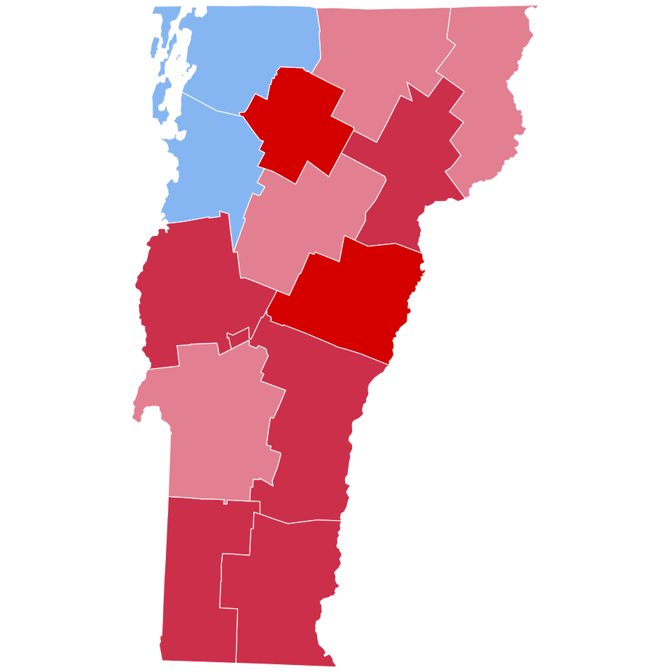

A42-POL-002 // HISTORICAL CLAIM REVIEW
Claims of Fraud in the 1960 US Presidential Election
Assessment: Some local irregularities are plausible and were alleged contemporaneously; a coordinated national theft that changed the winner is not established.


The precise allegation
After John F. Kennedy narrowly defeated Richard Nixon in 1960, allegations of ballot fraud focused on Illinois, especially Chicago, and Texas. Local irregularities and political machines existed, but historians and official reviews have not established that fraud changed the national result. The claim that Nixon conceded only because party elders forced him ignores his stated decision and the uncertainty of recount outcomes.
Chronology and political context
Kennedy won the popular vote by roughly 112,000 votes and secured the Electoral College. Nixon considered challenges in Illinois and Texas but conceded on November 9. Republican investigations identified alleged irregularities, especially in Cook County; recounts and court proceedings did not overturn the result. The episode occurred amid intense cold-war politics and close state-level margins.
Primary historical record
State canvass records, recounts, court filings, congressional materials, and campaign correspondence document both the tight totals and complaints. Official records establish that election procedures differed across counties. Investigations were partisan and uneven, and no comprehensive modern audit of every 1960 ballot exists, limiting certainty about isolated fraud without proving a national conspiracy.
Corroboration and contrary evidence
Scholars including Robert Dallek and historians of the Kennedy campaign recognize Chicago machine politics but generally conclude there is no reliable evidence that fraud changed the presidency. Nixon's private statements and public concession support his choice to avoid a constitutional crisis. Allegations of statewide fraud have not been matched by a demonstrated number of altered votes sufficient to reverse the outcome.
What remains uncertain
The exact extent of local ballot manipulation is difficult to measure from surviving records, and individual incidents may have occurred. The counterfactual depends on recounts and legal challenges never completed. It is therefore too strong to claim a perfectly clean election, but also unsupported to state that Kennedy's national victory was stolen.
Calibrated verdict
Some local irregularities are plausible and were alleged contemporaneously; a coordinated national theft that changed the winner is not established. The election's closeness justifies scrutiny, but the evidence does not support declaring fraud as fact. Nixon's concession and the absence of a reversal-worthy documented tally remain central.
What evidence could change this assessment
A complete ballot-level recount with intact chain of custody, authenticated machine instructions, and independent evidence showing altered totals exceeding the margin would change the verdict. Newly discovered campaign communications might prove organized fraud. General testimony about machine politics cannot substitute for evidence of enough specific votes to change the result.
Sources and source limits
- U.S. National Archives — 1960 presidential election recordsOfficial electoral results and archival guidance establish the final vote; they do not audit every local ballot.
- Robert Dallek, An Unfinished Life: John F. Kennedy, 1917–1963 (Little, Brown)Scholarly biography assesses campaign allegations and evidence; a narrative synthesis, not a comprehensive county recount.
- Encyclopaedia Britannica — United States presidential election of 1960Provides result and context; tertiary source with limited detail on local fraud accusations.